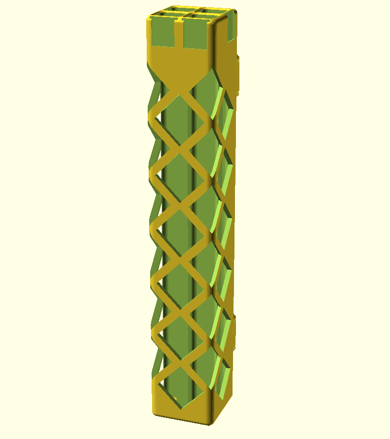
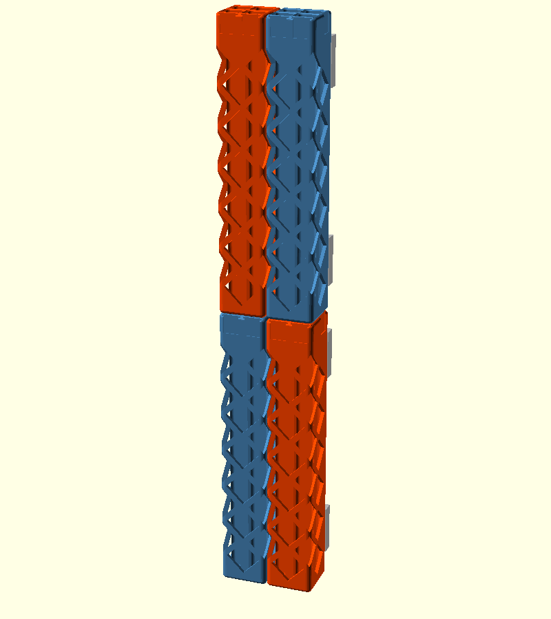
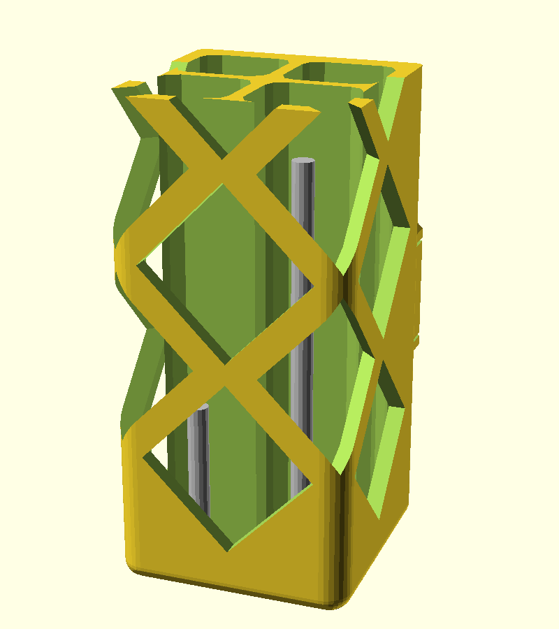
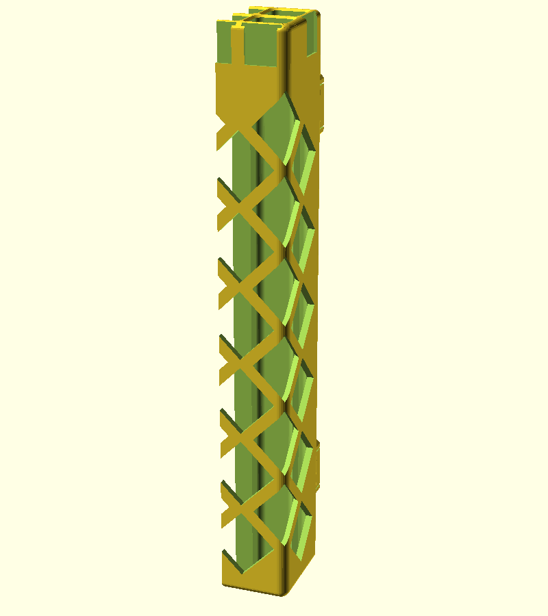
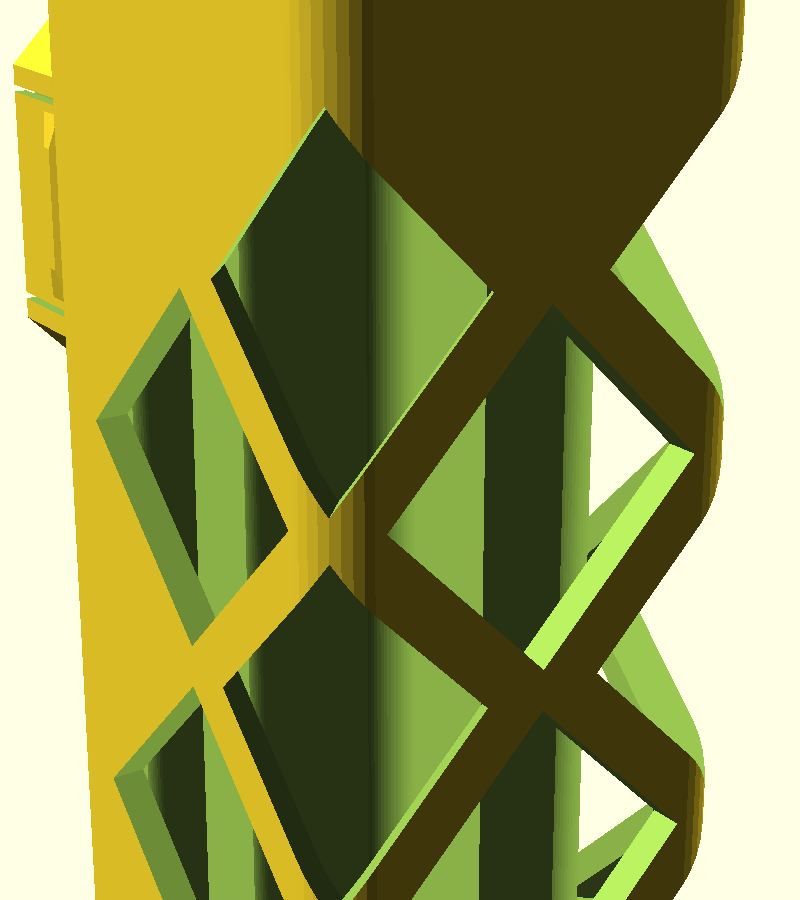
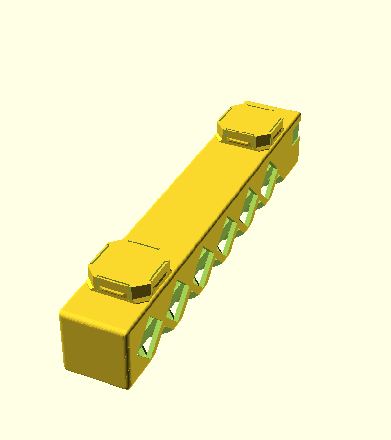

Thin steel rod arrives in 300 mm lengths and rolls off the bench at the first knock. The 0.5, 0.8 and 1.0 mm diameters look the same from a metre away. The short offcuts disappear first, usually at the moment a single hinge pin is needed. I cut this rod into pins for hinges made with my OpenSCAD hinge library. This post describes a wall-mounted pot that keeps each diameter in its own compartment, for anyone storing small rod, wire or drill bits on an openGrid board.
Download the model: the parametric OpenSCAD source is on GitHub at morganp/Openscad_rod_holder, MIT licence.

One cell wide, six tall
The holder snaps onto an openGrid board, the wall mounting system by David D, which uses a 28 mm grid. It takes 1 grid cell of width and 6 cells of height, so it measures 27.6 x 27.6 x 167.6 mm. The 0.4 mm missing from each cell leaves a gap between neighbours, so holders tile flush side by side and stack flush above each other.
Inside are 4 compartments in a 2 x 2 grid, each about 11 x 10.5 mm and 165.6 mm deep. Each diameter gets its own compartment, with one spare. A 300 mm rod stands about 134 mm proud of the top, which leaves plenty to grab.
Version 1 was 2 cells wide with 4 compartments in a single row. Version 2 packs the same 4 compartments into half the wall space.

Seeing the offcuts
Rod gets used from the top, so the short offcuts collect at the bottom of a 166 mm bore, out of sight. A lattice of diamond windows runs up the outer walls and shows them without tipping the holder out. The diamonds wrap round the 2 front corners, so the front view shows the front corner of all 4 compartments.

Windows in a rod holder look like a way for rods to fall out. They are not, because the lowest window starts 4 mm above the floor. A rod rests its bottom end on the floor behind that solid band. To escape, it has to be lifted over the band first, and gravity keeps it seated. A rod leaning against a window can only push its top end out, which slides it upwards rather than out.

Labels and printing
Every compartment has a card label pocket. The front row is labelled on the front face, and the back row on the side it touches. Cards drop in from the top, so changing a label means writing a new slip of card rather than reprinting the holder.

The holder prints front face down with the snaps pointing up. Every diamond edge runs at 45 degrees, so the part needs no supports and no bridges across the windows.

Not yet printed
I have not printed this version yet. Two things still need testing: whether the 0.5 mm rod stays in its compartment, and whether a 168 mm part with this many windows is stiff enough. Print a single openGrid snap first and check the fit on your board before committing to the full part.
Files and parts
- Model: Openscad_rod_holder, MIT licence, every dimension parametric
- openGrid snap geometry: openscad-opengrid
- Hinges that use the pins: OpenSCAD_hinge
- openGrid by David D, CC BY 4.0: openGrid on Printables
The steel rod, sold in 300 mm lengths:
As an Amazon Associate I earn from qualifying purchases.